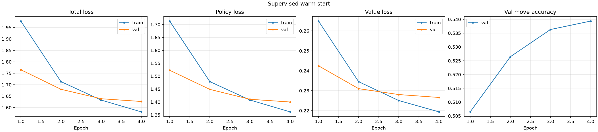
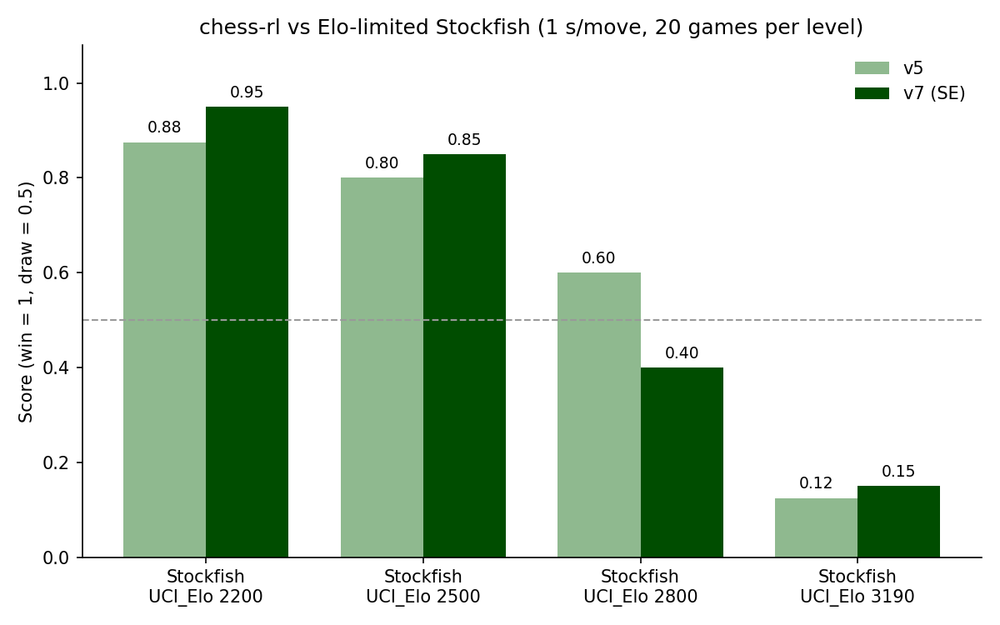

Teaching a Network to Play Chess from Scratch(ish)
My first chess AI was a depth-limited minimax player with a hand-written evaluation function.
It worked, but every bit of its "understanding" was something I had typed in myself.
I wanted to see how far I could get with the opposite approach: a neural network that learns
what a good position looks like, plus a search that uses that judgment, roughly the recipe
behind AlphaZero. This post walks through how chess-rl is built, what each training
run changed, and which ideas actually moved the needle.
The setup
The engine has two parts:
- A policy/value network. It takes the board (with a few moves of history, encoded as planes) and outputs a probability for every legal move (the policy) and a single number for who is winning (the value). The final model is a ResNet with 128 channels and 10 residual blocks, plus squeeze-and-excitation (SE) layers.
- Monte Carlo Tree Search (MCTS). A PUCT search uses the policy to decide which moves to explore and the value to score the positions it reaches, so it never needs to play a game out to the end. The search runs in batches, so many leaf positions go through the GPU in one call. It also uses bitboards for encoding and reuses the tree between moves.
Training happens in two stages: a supervised warm start on human games, then self-play reinforcement learning, where the search's output becomes the network's next training target.
Stage 1: Learning from humans first
Pure AlphaZero starts from random weights. That takes an enormous amount of compute, so I skipped the random phase by first training the network on Lichess games. I converted a monthly Lichess PGN dump into packed training shards and trained the network to predict the move the human played (policy) and the game result (value).

Picking an architecture
Before committing to a big run I did a small architecture sweep. Each model had about 1M parameters and the same training budget. I also trained the baseline twice with different seeds so I would know how much of a difference was just noise.
| Model | Params | Val move accuracy | vs baseline |
|---|---|---|---|
| ResNet 64ch × 6 | 1.04M | 43.92% | — |
| ResNet, different seed | 1.04M | 43.68% | −0.24 pp (noise) |
| ResNet + SE | 1.05M | 44.27% | +0.35 pp |
| Transformer d128 × 4 | 1.09M | 38.28% | −5.64 pp |
| Transformer + attention bias | 1.16M | 39.07% | −4.84 pp |
| ResNet + SE + 2 attention layers | 0.97M | 43.80% | −0.12 pp |
SE was the only change that beat the seed-noise band, so it went into the full-size model. The pure transformers were about 5 points behind. At this size and budget, convolutions' built-in sense of board geometry is hard to beat.
Stage 2: Self-play
In self-play, the engine plays itself. At every move, MCTS produces a better move distribution than the raw policy, and the network is trained to match it. The game result becomes the value target. Better network → better search → better targets, and so on.
Most of the engineering went into making that loop fast and stable:
- Multiprocess self-play. One worker per CPU core plays games, and a coordinator batches their positions for the GPU. A replay buffer decodes positions on the GPU so training isn't bottlenecked on Python.
- Playout cap randomization. Only 25% of moves get a full 600-simulation search, and only those become training samples. The rest use a cheap 80-simulation search just to keep the game moving. This gets far more games per hour without making the targets worse.
- Resignation. Clearly lost games (value below −0.9 for three moves in a row) are resigned, except for 10% that are played out so the engine still learns endings.
- A human-move anchor. A fraction of every training batch still comes from the Lichess data. This keeps a young self-play run from drifting into strange openings.
The runs
| Run | What changed |
|---|---|
| v4 | First multiprocess self-play from the supervised net |
| v5 | Fast batched MCTS, playout cap randomization, resignation, human-move mix |
| v6 | v5 extended at a lower learning rate. A higher peak (1.5e-4) regressed by −122 Elo. |
| v7 | Fresh run from the SE warm start with 600-simulation targets |
| v8 | Gumbel-style completed-Q policy targets, higher LR, lighter human anchor (in progress) |
To compare versions I used head-to-head arena matches with color-swapped pairs and 95% confidence intervals. Over 400 pairs, v7 beat the SE supervised model by +45 Elo [+25, +65] and beat v6 by +47 Elo [+26, +68]. It is now the model behind the Lichess bot.
The v6 result was a useful lesson. Raising the learning rate when extending a finished run didn't speed anything up. It undid progress. Self-play is a moving target, and a large step size will happily overwrite what the network already learned.
How strong is it?
For an outside reference, I played the engine against Stockfish with its strength limited through
UCI_Elo, at 1 second per move for Stockfish and 20 games per level.

v7 scores 0.95 against the 2200 setting and 0.85 against 2500, and gets about 0.15 against Stockfish's strongest limited setting. The v5/v7 crossover at 2800 is within the noise of 20 games, which is why I rely on the arena (with confidence intervals) to choose between versions.
A detour: editing the weights by hand
One of the more unusual experiments was weight-space programming: instead of training, an LLM reads the network's weights, finds a flaw, and writes a weight edit directly. It worked under a strict budget of forward passes, with no gradients, no games and no search.
It found what looked like a real flaw. In trivially won endgames like king and queen vs king, the value head had no sense of progress. It didn't care whether the losing king was in the center or pinned to the edge, probably because self-play resigns those games before they're played out. So it built a small "mop-up" circuit in 6 value-head units that were never active (0.33% of the model, with the policy untouched). The circuit adds a bonus for pushing the lone king to the edge, and only switches on in those endgames.
Inside the sandbox, the edit did exactly what it was supposed to. Then the held-out evaluation showed no improvement at all: the original model already converted all 200 test endgames, and the arena was a dead heat (+0 Elo, CI ±5). With 200 simulations, search finds those mates on its own, so the flat value head was never actually a problem. My takeaway: judge a network's flaws by how it plays with search, not by its raw outputs.
What I learned
- Warm starts are worth it on a small budget. Supervised pretraining gets the network to sensible chess immediately, so self-play compute goes into refining instead of discovering that queens are valuable.
- Measure noise before trusting a gain. The second baseline seed in the architecture sweep and the arena confidence intervals saved me from chasing differences that weren't real.
- Throughput is the real hyperparameter. Batched MCTS, tree reuse and playout cap randomization did more for strength than most of the knobs I tuned.
- Learning rate in RL is unforgiving. The −122 Elo regression in v6 came from a single setting.
What's next
v8 tests whether the network is learning from search too slowly. In v7's replay buffer, the search still disagreed with the policy's top move 37% of the time after 2.77M samples. v8 switches to completed-Q policy targets (from Gumbel MuZero), which carry more information per position than raw visit counts, and reduces the human-move mix from 0.3 to 0.05 so a higher learning rate can be used.
The code, configs for every run and the evaluation game records are all on GitHub.